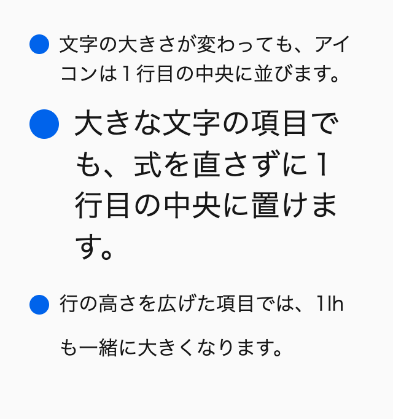
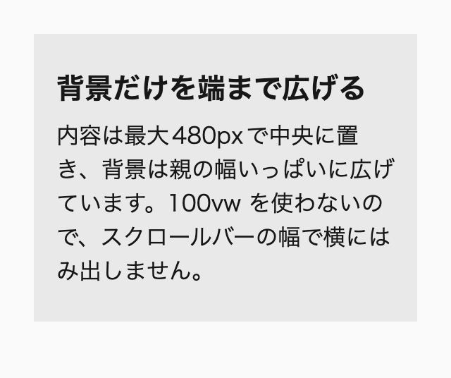
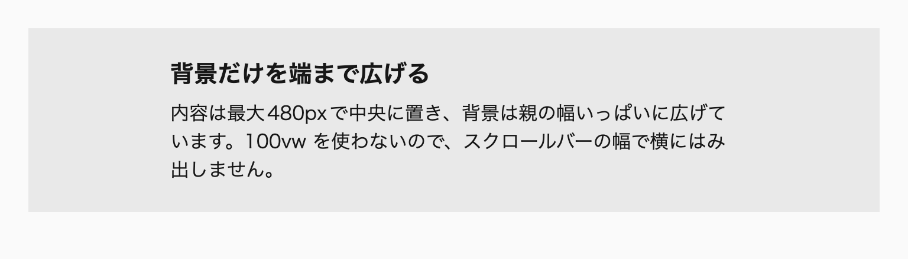
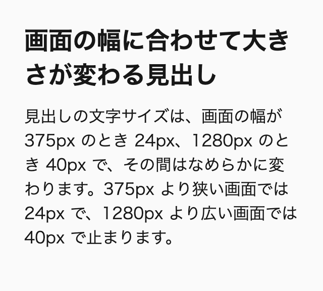
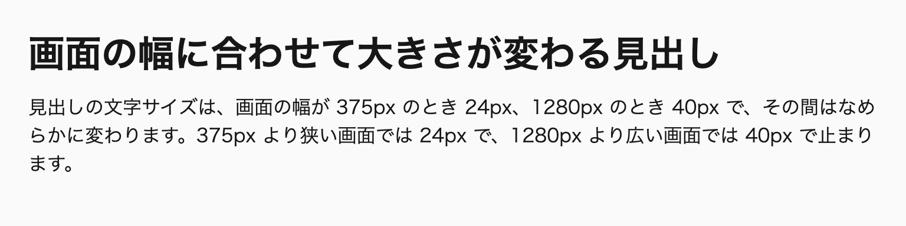
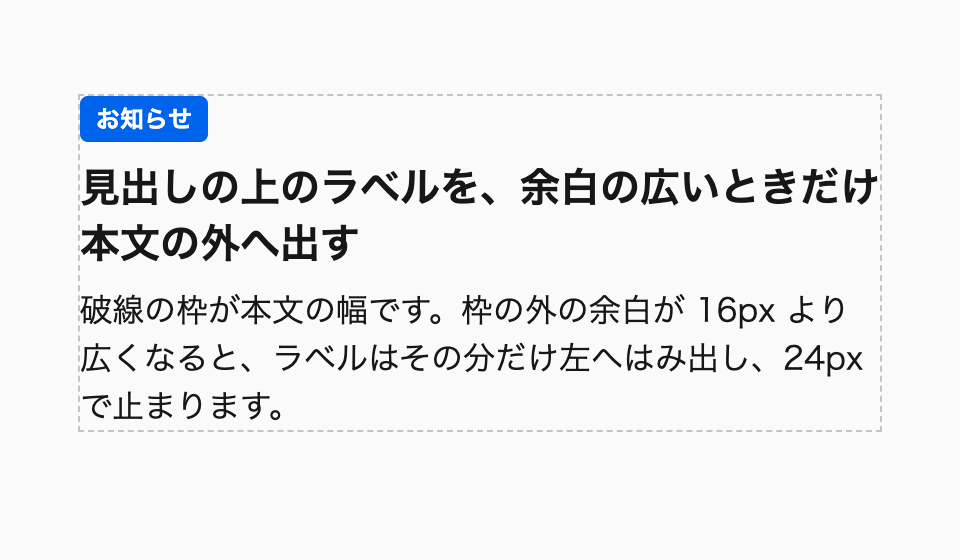
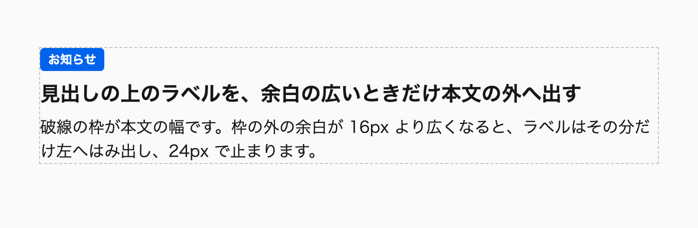

単位は、「ユーザーの設定や画面の大きさが変わったとき、その値にどう振る舞ってほしいか」で選びます。計算して決まる値は、結果ではなく式で書きます。
同じ16pxの大きさでも、16px、1rem、1em、4svi では、ユーザーが文字サイズの設定を変えたときや、画面の幅が変わったときの振る舞いがまったく違います。そのため、単位を選ぶことは、見た目の数値を決めることではなく、変化への応じ方を決めることになります。
私自身、以前は「pxとremはどちらでもよく、迷ったらremを使えばいい」と考えていました。スマートフォン向けの表示では、デザインカンプの比率を保つために vw を使っていた時期もあります。しかし、ズームと文字サイズの設定の違いや、モバイルのブラウザのUIとビューポートの関係を知るにつれて、単位ごとに理由を持って選ぶように変わりました。ジェネレーターで作った clamp() の値がマジックナンバーになりやすいことから、計算の式を残すことも大事にしています。
この章のルールのうち、vw や vh の使用と、単位の付いた line-height は、本書のStylelintの設定で検出できます。一方で、pxとremのどちらを選ぶかや、clamp() の推奨値の根拠は、ツールでは判断できません。コードを書く人が、値ごとに理由を持って選ぶ必要があります。
この章を読むと、ある値をユーザーの文字サイズの設定に追従させるべきかどうかから、pxとremのどちらで書くかを決められるようになります。画面の大きさで変わる値では、vw と vh を避けて svi や dvb などから選ぶか、置き場所の幅に合わせる cqi を使うかを判断できます。ジェネレーターで作った clamp() の値のように根拠の見えない数値を見つけたときは、式に書き直して根拠を残せます。
この章は次の5つの節で構成しています。
line-heightvw と vh を使わない理由と、svi・svb・dvb・lvb の選び方、cqi との使い分けcalc()、min()、max()、clamp() で値の根拠を残す書き方と、流体的な値の組み立て方clamp()、abs() で求める並びの中央からの距離、単位を外す割り算、calc-size() と @function の扱いattr() でHTMLの属性値を読む書き方と、if() を使う場面、未対応の環境へのフォールバックブレイクポイントの単位とコンテナサイズクエリの書き方は第13章「レスポンシブデザイン（巻2）」で、トークンの命名は第10章「コンポーネントとカスタムプロパティ（巻2）」で扱います※1。この章のコード例では、説明に関係しない @layer の記述を省略しています。
初めて読むときは、「6-1 pxとremを使い分ける」「6-3 計算関数で根拠を式に残す」を読みます。6-2のビューポート単位とコンテナ単位、6-4の計算関数の応用、6-5の if() と attr() は、その値が必要になってから読んでください。
次のルールを先に押さえ、ほかのルールは、該当する場面で付録A「ルール一覧（巻3）」から引けば足ります。
font-size-in-rem：font-size はremで指定し、pxを使いません（要素の文字サイズに比例させるならem）。no-root-font-size-change：html { font-size: 62.5% } などで、remの計算を簡単にする目的でルートの文字サイズを変えません。unitless-line-height：line-height は単位のない数値で指定します。no-vw-vh：vw、vh、vi、vb、vmin、vmax は使いません。clamp-rem-bounds：文字サイズを clamp() で書くときは、最小値と最大値をremにし、推奨値をremと相対単位の和にします。単位と式によって、1つの値がどう計算されるかは決められるようになりました。ただし、その値が実際の大きさや位置にどう反映されるかは、要素がどのレイアウトの方式の中にあるかで変わります。次は、通常フロー、Flexbox、Grid、位置指定のそれぞれの規則を、第7章「レイアウトの仕組み」で整理します。
単位は、「ユーザーがブラウザの文字サイズを大きくしたとき、この値も一緒に大きくなるべきか」で選びます。大きくなるべき値にはrem（またはem）を、そうでない値にはpxを使います。文字サイズはrem、padding や線の太さはpxが基本です。
remへの変換は calc(24 / 16 * 1rem) のようにピクセル値からの式で書き、html { font-size: 62.5% } のようにルートの文字サイズを変える方法は使いません。line-height には単位を付けません。
単位の話題でよく見かけるのが、「アクセシビリティのために font-size はremで指定する」というルールです。方向は正しいのですが、このルールだけが独り歩きすると、極端な書き方が生まれます。すべてをpxで書く書き方と、余白や線までremで書く書き方です。
/* 🙅♂ Not Recommended */
html {
font-size: 62.5%;
}
.card {
padding: 1.6rem 2.4rem;
border: 0.1rem solid oklch(85% 0 0deg);
border-radius: 0.8rem;
font-size: 1.6rem;
}すべてをpxで書くと、ブラウザの文字サイズの設定を大きくしても、文字は大きくなりません。文字を大きくしたいユーザーの設定が反映されません。反対に、上の例のようにすべてをremで書くと、文字と一緒に余白や線まで大きくなります。余白が広がった分だけ文字を置ける幅が狭まり、1行に入る文字数が減って、かえって読みにくくなります。
上の例には、もう1つ問題があります。ルートの文字サイズを 62.5% にして1remを10px相当にする方法は、remの計算を簡単にするためのものです。しかし、ルートの文字サイズが16px相当であることを前提にした外部のCSSを読み込むと、そちらの大きさが崩れます。ルートの文字サイズを 10px のようにpxで指定する例もありますが、これではユーザーの文字サイズの設定そのものが反映されなくなります。
私が気になるのは、remを使っていても、文字サイズの設定を変えて確かめた形跡のないコードです。確かめれば、ルートに font-size: 10px と書いたサイトで設定が反映されていないことはすぐに分かります。remは使うだけで正しくなる単位ではなく、設定を変えたときの振る舞いまで考えて使う単位です。
ブラウザには、表示を大きくする機能が2つあります。ページ全体を拡大するズームと、文字の大きさだけを変える文字サイズの設定です。ズームはpxで指定した値も含めてすべてを拡大します。一方、文字サイズの設定が変えるのはルートの文字サイズで、その影響を受けるのはremやemで指定した値だけです。
Chromeでは、設定の「デザイン」にある「フォントサイズ」が文字サイズの設定にあたります。デフォルトは16pxで、ここを大きくするとルートの文字サイズが変わり、remで指定した値もそれに比例して大きくなります。pxで指定した値は変わりません。
以前の私は、「remで指定した値が変わるのはChromeの文字サイズの設定だけで、使う人の少ない機能に合わせる手間は割に合わない」という意見にも一理あると感じていました。考えが変わったのは、<meta name="text-scale"> が登場したからです。このメタタグを有効にすると、OSの文字サイズの設定とブラウザの文字サイズの設定の両方に比例して、文字サイズが拡大・縮小されます。pxで指定した値がこれに追従しないことは、策定中の仕様にも書かれています。
Baseline一部のブラウザのみ
<meta name="text-scale">
web-features 3.40.0 のデータ（2026年9月確認）
2026年9月の時点で、<meta name="text-scale"> に対応しているのはChrome系のブラウザだけです。それでも、OSの設定で文字を大きくしているユーザーの設定も反映されるようになり、remを使う意味は大きくなりました。
2つの機能は、全体を大きくしたいならズーム、文字だけを大きくしたいなら文字サイズの設定というように、役割が分かれています。すべてをremで書くと、文字サイズの設定がズームと同じ振る舞いになり、この役割の違いがなくなります。だからこそ、どの値を文字と一緒に大きくし、どの値をそのままにするかを、値ごとに選ぶ必要があります。
次のデモでは、文字サイズの設定を3段階で切り替えられます。ブラウザの設定はデモの中から変えられないので、ルートの文字サイズを切り替えて再現しています。「特大」を選ぶと、すべてpxのカードは何も変わらず、すべてremのカードは余白と線まで太くなります。使い分けたカードでは文字だけが大きくなり、文字を置ける幅が広く残ります。
デモ6-1-1 文字サイズの設定を変えたときの、px・rem・使い分けの違い（補足サイト）
すべてremのカードは、ズームで拡大したときとほとんど同じ見え方です。文字サイズの設定を使うユーザーが求めているのは、全体の拡大ではなく、文字を読みやすくすることのはずです。使い分けたカードのほうが、その求めに合っています。
判断の基準は、「ユーザーがブラウザの文字サイズを大きくしたとき、この値も一緒に大きくなるべきか」です。はいと答えられる値はremで、いいえと答えられる値はpxで指定します。
remで指定するのは、まず font-size です。段落の間の縦の余白も、文字の大きさとの釣り合いで読みやすさが決まるので、remにします。テキストを含む要素の幅（max-inline-size）やボタンの最小の高さも、文字だけが大きくなると窮屈になるため、remで指定します※1。
pxで指定するのは、padding、とくに水平方向の padding です。文字が大きくなった分だけ1行に入る文字数は減っているので、余白まで広げると、さらに文字数が減ってしまいます。border-width、box-shadow、outline-width、outline-offset のような装飾的な値も、文字の大きさとは関係がないのでpxにします。
emを使うのは、その要素自身の文字サイズに比例させたい値です。見出しの横に置くアイコンの大きさを 1em にすれば、見出しの文字サイズに合わせてアイコンも大きくなります。アイコンとラベルの間の gap や、見出しに隣接する margin も、emにすると文字との比率を保てます。
@scope (.scoped.notice-card) to (.scoped) {
:scope {
max-inline-size: calc(640 / 16 * 1rem);
padding: 16px 24px;
border: 1px solid oklch(85% 0 0deg);
border-radius: 8px;
& > * + p {
margin-block-start: calc(12 / 16 * 1rem);
}
}
h2 {
display: block flex;
gap: 0.5em;
align-items: center;
font-size: calc(20 / 16 * 1rem);
}
._icon {
inline-size: 1em;
aspect-ratio: 1;
}
}このカードでは、文字サイズと段落の間の余白、カードの最大幅をremで、padding と線と角丸をpxで指定しています。アイコンの大きさとラベルとの間隔は、見出しの文字サイズに比例させたいのでemです。gap や margin のように場面によって答えが変わる値は、先ほどの問いに照らして1つずつ判断します。
デザインカンプの値は、たいていピクセルで書かれています。remに変換するときは、計算した結果（1.5rem）ではなく、calc(24 / 16 * 1rem) のように変換の式で書きます。16は、ブラウザの文字サイズのデフォルト値です。式にしておけば、カンプの「24px」をコードからそのまま読み取れ、電卓で割り算をする手間も、計算を間違える心配もなくなります。
この式があれば、ルートの文字サイズを 62.5% にして計算を簡単にする必要もありません。ルートの文字サイズはブラウザの設定のままにしておき、変換は式に任せます。
@scope (.scoped.article-header) to (.scoped) {
._lead {
max-inline-size: calc(560 / 16 * 1rem);
font-size: calc(18 / 16 * 1rem);
}
}clamp()、min()、max() の中では、calc() を省いて 24 / 16 * 1rem と書けます。これらの関数の引数では、もともと四則演算が使えるからです。メディアクエリの条件にも同じ式を使いますが、メディアクエリの中のremは、CSSでルートに指定した値ではなく、ブラウザの設定の文字サイズを基準に計算されます※2。
サイズのトークンを作るときも、同じ考え方を使います。余白のトークンを --spacing--md: 24; のように単位のない数値で持ち、使う場所で単位に変換します。同じ24pxの余白でも、段落の間ならrem、カードの padding ならpxと、使う場所によって選ぶ単位が変わるからです※3。
:root {
--spacing--sm: 16;
--spacing--md: 24;
}
@scope (.scoped.notice-card) to (.scoped) {
:scope {
padding-inline: calc(var(--spacing--md) * 1px);
& > * + p {
margin-block-start: calc(var(--spacing--sm) / 16 * 1rem);
}
}
}なお、カンプの比率を保つために、画面の幅に比例する係数をすべての値に掛ける書き方（フルリキッド）は使いません。文字サイズを画面の幅から決めると、狭い画面で文字が読めないほど小さくなり、文字サイズの設定も効きにくくなるからです※4。
line-height は、1.6 のように単位のない数値で指定します。単位のない数値は「文字サイズの何倍か」という比率のまま子要素に継承されます。そのため、子要素の文字サイズが変わっても、行の高さはそれに合わせて計算し直されます。
単位を付けると、事情が変わります。24px や 1.5em のように長さで指定すると、計算した後の長さがそのまま子要素に継承されます。本文の16pxに合わせた24pxの行の高さが32pxの見出しにもそのまま使われ、見出しが2行になると行が重なります。% で指定した場合も、計算後の長さが継承される点は同じです。
/* 🙅♂ Not Recommended */
.article {
line-height: 24px;
}
.article h2 {
font-size: calc(32 / 16 * 1rem);
}@scope (.scoped.article-body) to (.scoped) {
:scope {
line-height: 1.75;
}
h2 {
font-size: calc(32 / 16 * 1rem);
line-height: 1.4;
}
}単位のない数値なら、文字サイズの設定を大きくしたときも、行の高さが文字と一緒に大きくなります。行の高さは「文字と一緒に大きくなるべき値」の代表で、単位のない比率がそれを自然に満たします。本書のStylelintの設定では、declaration-property-unit-allowed-list で line-height に単位が付いていないかを検証しています。
デザインカンプでは、行の高さが「行送り28px」のようにピクセルで書かれていることがあります。その場合は、文字サイズで割った比率にします。16pxの文字で行送りが28pxなら、line-height は1.75です※5。
lh は、その要素の line-height を長さにした単位で、rlh は、ルート要素（html）の line-height を長さにした単位です。line-height を単位のない数値で指定していれば、行の高さは文字と一緒に大きくなるので、lh と rlh で決めた値も文字サイズの設定に追従します。「何行分か」で決まる値には、remよりもこれらの単位が合います。
Baseline広く利用可能2026年5月から（新しく利用可能になったのは2023年11月）
lh unit
web-features 3.40.0 のデータ（2026年9月確認）
たとえば、行頭のアイコンを1行目の中央に置くときは、アイコンの上下の margin を、1行の高さとアイコンの大きさの差の半分にします。文字の大きさや line-height を変えても、式を直す必要はありません※6。
@scope (.scoped.feature-list) to (.scoped) {
._item {
&::before {
content: "";
inline-size: 1em;
aspect-ratio: 1;
margin-block: calc((1lh - 1em) / 2);
}
}
}次のデモでは、文字サイズと line-height の違う3つの項目に、同じ式でアイコンを置いています。幅を狭めて項目が折り返しても、アイコンはどれも1行目の中央にとどまります。

幅 320px
幅 768px
lh の基準は、値を使う要素の行の高さです。見出しと段落のように line-height の違う要素に同じ 1lh を指定すると、要素ごとに長さが変わります。要素をまたいで同じ長さにそろえたいときは、rlh を使います※7。
remを使ったら、ブラウザの文字サイズの設定を大きくして、表示を確かめます。remを使っていても、設定が反映されていなかったり、文字が大きくなったときに崩れたりしていれば意味がありません。どちらも、設定を変えて見なければ分からないことです。
確かめるときは、文字が大きくなっているか、padding や線が太くなりすぎていないか、固定の高さから文字があふれていないかを見ます。高さを height で固定していると、文字が大きくなったときに中身があふれるので、高さは min-block-size で指定します（11-3 サイズと内容の変化に耐える（11-3、巻2））。ブレイクポイントをremで指定していれば、文字を大きくしたときに1カラムのレイアウトへ早めに切り替わることも確かめられます。
/* 🙅♂ Not Recommended */
.button {
block-size: 48px;
font-size: 1rem;
}@scope (.scoped.button) to (.scoped) {
:scope {
min-block-size: calc(48 / 16 * 1rem);
padding-inline: 24px;
font-size: 1rem;
}
}前者は、文字サイズの設定を「特大」にすると、1.5倍になった文字が48pxの高さからはみ出します。後者は最小の高さもremなので、文字と一緒に高くなります。
ズームでの確認も併せて行います。ズームはpxを含めてすべてを拡大するので、拡大したときに横スクロールが起きないかや、ビューポート単位で決めた値が拡大されているかを見ます※8。
必須単位は「ユーザーがブラウザの文字サイズを大きくしたとき、この値も一緒に大きくなるべきか」で選び、大きくなるべき値は rem（または em）、そうでない値は px にする。
unit-by-text-scaling
必須font-size は rem（要素の文字サイズに比例させるなら em）で指定し、px を使わない。
font-size-in-rem
推奨padding（とくに水平方向）と、border-width、box-shadow、outline-width、outline-offset のような装飾的な値は px で指定する。
padding-and-decoration-in-px
推奨アイコンの大きさ、アイコンとラベルの間の gap、見出しに隣接する margin のように、その要素自身の文字サイズに比例させたい値は em で指定する。
em-for-own-font-size
推奨px の値を rem に変換するときは calc(24 / 16 * 1rem) のように変換の式で書き、計算した結果（1.5rem）を書かない。
px-to-rem-formula
禁止html { font-size: 62.5% } のように、rem の計算を簡単にする目的でルートの文字サイズを変えない。
no-root-font-size-change
必須line-height は単位のない数値で指定する。
unitless-line-height
推奨サイズのトークンは単位のない数値（px 相当）で持ち、使う場所で calc(var(--spacing--md) / 16 * 1rem) や calc(var(--spacing--md) * 1px) に変換する。
unitless-size-tokens
必須rem を使ったら、ブラウザの文字サイズの設定を大きくして表示を確かめる。
verify-with-text-scaling
vw と vh は使いません。ビューポート単位が必要なときは、横方向は svi、縦方向は svb を優先し、スクロールで値が変わる dvb は避けます。lvb を使うのは、ブラウザのUIが出ていても引っ込んでいても高さいっぱいに広げたい、固定の背景などだけです。
ビューポート単位を使うのは、ページ全体の余白やヒーローのように、メディアクエリと対になる値です。置き場所が変わるコンポーネントの中で幅に応じて値を変えたいなら、名前付きのコンテナと cqi を使います。どちらの単位も、% やイントリンシックなレイアウトで解決できないときに使う手段です。
画面の高さいっぱいのヒーローを作るとき、高さを 100vh にする例をよく見かけます。PCのブラウザでは意図どおりに見えますが、スマートフォンでは下の部分がブラウザのツールバーに隠れることがあります。ヒーローの下端にボタンを置いていると、最初の表示でボタンが見えません。
/* 🙅♂ Not Recommended */
.hero {
inline-size: 100vw;
block-size: 100vh;
}原因は、vh の基準が、最初に見えている領域ではないことです。モバイルのブラウザでは、アドレスバーやツールバーがスクロールに合わせて出入りし、そのたびに見えている領域の高さが変わります。現在のCSS Values Level 4では、接頭辞のない vh は、UIが引っ込んだ最も大きい領域（後述のラージビューポート）を基準にすると定められています。UIが表示されている最初の状態では、その分だけ要素が画面からはみ出すわけです。
この定義は、実装に合わせて後から決まりました。以前の仕様は、ブラウザのUIが出入りする場合を想定しておらず、どちらの高さを基準にするかは実質的にブラウザに任されていました。多くのブラウザが大きいほうを選んでいたため、仕様も、Webの互換性を保つため、その選択を引き継ぎました（2026年10月確認）。基準が定まったいまも、vh と書いただけでは、UIが出ている状態と引っ込んだ状態のどちらに合わせたいのかがコードから読み取れません。
inline-size: 100vw にも問題があります。vw はスクロールバーの幅を含めて計算されるので、スクロールバーが幅を取る環境では、要素がその分だけはみ出して横スクロールが起きます。Chrome 145からは、ルートに scrollbar-gutter: stable や overflow: scroll が指定されていると、vw がスクロールバーを除いて計算されるようになりました。どちらもスクロールバーの領域が常に確保される指定で、CSS Values Level 4の仕様に沿った動作です。本書で使うkiso.css（巻2）は前者の指定を含んでいます。SafariとFirefoxでは、scrollbar-gutter: stable を指定しても従来どおり横スクロールが起こりえます（2026年9月確認）。
こうした問題を解決するために、ビューポートの大きさを3つに分けた単位が追加されました。ブラウザのUIが表示されているときの最も小さい領域が「スモールビューポート」、UIが引っ込んだときの最も大きい領域が「ラージビューポート」です。そのときどきで実際に見えている領域を「ダイナミックビューポート」と呼びます。それぞれを参照する単位は、sv*、lv*、dv* で始まります。
Baseline広く利用可能2025年6月から（新しく利用可能になったのは2022年12月）
スモール・ラージ・ダイナミックのビューポート単位
web-features 3.40.0 のデータ（2026年9月確認）
単位の末尾には、svw や svh のような物理方向の書き方と、svi や svb のような論理方向の書き方があります。本書では論理プロパティにそろえて、インライン方向を表す i と、ブロック方向を表す b を使います。横書きなら、i が横方向、b が縦方向です※1。
基本は、横方向が svi、縦方向が svb です。スモールビューポートを基準にしておけば、ブラウザのUIが表示されている最も狭い状態でも、要素が画面に収まります。また、後で説明する cqi は、有効なコンテナが見つからないときに svi として計算されます。横方向の基準を svi にそろえておけば、この振る舞いとも食い違いません。
dvb は、一見すると理想的な単位に見えます。しかし、ダイナミックビューポートの高さはUIが出入りするたびに変わるので、dvb で大きさを決めた要素は、スクロール中に伸び縮みします。後ろにある内容も押し下げられたり引き上げられたりして、レイアウトシフトが起きます。本書では、要素の大きさに dvb を使いません。
lvb を使うのは、ブラウザのUIの有無にかかわらず、常に画面の高さいっぱいに広げたい場合です。たとえば、position: fixed で固定した背景の高さが 100svb だと、UIが引っ込んだときは下の端に隙間ができます。ラージビューポートを基準にすれば、スクロール中も背景が途切れません。
@scope (.scoped.hero) to (.scoped) {
:scope {
display: block grid;
align-content: end;
min-block-size: 100svb;
}
}
@scope (.scoped.page-background) to (.scoped) {
:scope {
position: fixed;
inset-inline: 0;
inset-block-start: 0;
block-size: 100lvb;
background-image: linear-gradient(oklch(95% 0.02 250deg), oklch(85% 0.05 250deg));
}
}ヒーローの高さは、block-size ではなく min-block-size で指定しています。「少なくとも画面の高さいっぱい」という指定にしておけば、内容が増えたときや文字サイズが大きくなったときにも、中身があふれずに要素が伸びます。
ビューポート単位は、ページ全体の状態と結びついた値です。そのため、ページ全体の余白、ヒーロー、全幅の背景のように、ビューポートに対して成り立たせたい値に使います。メディアクエリと対になる単位です※2。
@scope (.scoped.page-section) to (.scoped) {
:scope {
/* 画面の幅 375px で 40px、1280px で 80px */
padding-block: clamp(40px, 4.42svi + 23.43px, 80px);
}
}ページのセクションの上下の余白は、どのセクションも同じ画面の上にあり、置き場所によって意味が変わりません。こうした値なら、ビューポートの幅に合わせて変えても問題はありません。余白は文字サイズの設定に追従させない値なので、この例では最小値と最大値をpxにしています。
反対に、置き場所が変わるコンポーネントの中では、ビューポート単位を使いません。同じカードをメインエリアとサイドバーに置くと、ビューポートの幅は同じでも、カードが使える幅は大きく違います。ビューポート単位で決めた値は、この違いを反映できません。
コンポーネントの中で幅に応じて値を変えたいときは、コンテナの幅を基準にした cqi を使います。cqi はコンテナのインライン方向のサイズの1%で、コンテナクエリと対になる単位です。ただし、有効なコンテナがないと svi として計算されるので、使えるのは、その要素が名前付きのコンテナの中にあると確実に言える場合に限ります※3。
次のデモでは、同じカードをメインエリアとサイドバーに置いています。どちらのカードにも、svi で文字サイズが変わる行と、cqi で変わる行があります。幅のボタンで768px以上を選ぶと2カラムになり、違いが分かります。
デモ6-2-1 svi と cqi で文字サイズを変えたときの、置き場所による違い（補足サイト）
svi の行は、メインエリアとサイドバーで同じ大きさです。サイドバーは幅が狭いのに文字が大きいままなので、途中で折り返しています。cqi の行は、カードが置かれた場所の幅に合わせて大きさが変わり、サイドバーでは小さく収まります※4。
文字サイズを font-size: 5vw や 4svi のようにビューポート単位だけで決めると、画面の幅に比例して文字が大きくなります。手軽ですが、この書き方には大きな問題があります。ブラウザの文字サイズの設定を大きくしても、文字が大きくならないことです。
/* 🙅♂ Not Recommended */
.hero-title {
font-size: 5vw;
}文字サイズの設定が変えるのはルートの文字サイズで、ビューポート単位はそれと関係がありません。さらに、ビューポート単位を直接使った値は、Chrome系のブラウザではズームしても拡大されないことがあります。文字を大きくしたいユーザーが、どちらの方法を試しても文字を大きくできなくなるわけです。
画面の幅に合わせて文字サイズを変えたいときは、clamp() を使います。最小値と最大値をremにして、推奨値をremとビューポート単位の和にすれば、remの部分が文字サイズの設定とズームに追従します※5。
ビューポート単位は、ほかの方法では解決できないときにだけ使います。先ほど触れたとおり、Chrome系のブラウザではビューポート単位を直接使った値がズームで拡大されないことがあり、スクロールバーの幅の扱いもブラウザによって異なるからです。% やイントリンシックなレイアウトで解決できるなら、そちらを優先します。
たとえば、inline-size: 100vw で要素を画面の幅いっぱいに広げる指定は、多くの場合なくても済みます。ブロック要素は、何も指定しなくても親の幅いっぱいに広がるからです。中央寄せのコンテンツから背景だけを画面の端まで広げたい場合も、グリッドの左右に余白の列を作る方法などで書けます※6。
@scope (.scoped.feature-band) to (.scoped) {
:scope {
display: block grid;
grid-template-columns: minmax(16px, 1fr) minmax(0, calc(480 / 16 * 1rem)) minmax(16px, 1fr);
background-color: oklch(92% 0.04 250deg);
& > * {
grid-column: 2;
}
}
}次のデモでは、帯の背景が親の幅いっぱいに広がり、内容は最大480pxで中央に置かれます。幅を768pxにすると、左右の余白の列が広がります。100vw を使っていないので、スクロールバーが幅を取る環境でも横にはみ出しません。

幅 320px

幅 768px
プロジェクト全体でビューポート単位を使う流体的な値を多用するなら、その都度値を書かずに、トークンかユーティリティにまとめます。基準にする画面の幅や係数がコードのあちこちに散らばると、カンプの幅が変わったときに直しきれなくなるからです※7。
なお、kiso.cssは body の min-block-size に 100dvb を指定しています。これはフッターを画面の下端に置くための最小の高さで、内容が画面より短く、スクロールが起きないときにだけ有効になる指定です。スクロールによる伸び縮みが問題にならない場面なので、dvb を使っています。
本書のStylelintの設定では、unit-disallowed-list で vw、vh、vi、vb、vmin、vmax を警告しています。svh や svw のような物理方向の単位は logical-css/require-logical-units が警告し、論理方向の svb や svi を勧めます※8。
禁止vw、vh、vi、vb、vmin、vmax を使わない。
no-vw-vh
推奨ビューポート単位は、横方向は svi、縦方向は svb を優先する。
prefer-svi-svb
非推奨要素の大きさを dvb（dvh）で指定しない。
avoid-dvb
推奨ブラウザの UI の有無にかかわらず画面の高さいっぱいに広げたい要素（固定した背景など）には、lvb を使う。
lvb-for-fixed-background
推奨ビューポート単位は、ページ全体の余白やヒーローのようにメディアクエリと対になる値に使い、置き場所が変わるコンポーネントの中では使わない。
viewport-units-with-media-queries
禁止文字サイズをビューポート単位だけで決めない（font-size: 4svi など）。
no-viewport-only-font-size
推奨ビューポート単位は、% やイントリンシックなレイアウトで解決できないときだけ使う。
viewport-units-as-last-resort
推奨ビューポート単位を使う流体的な値をプロジェクト全体で多用するときは、その都度書かず、トークンかユーティリティにまとめる。
centralize-viewport-fluid-values
計算して決まる値は、計算した結果ではなく、calc() の式で書きます。式にしておけば、その値が何から決まったのかがコードに残ります。上限と下限は min() と max() で、幅に応じて連続的に変わる値は clamp() で表します。
文字サイズのような値を clamp() で書くときは、最小値と最大値をremにし、推奨値をremと相対単位の和にします。推奨値は、2つの基準の幅とそのときの値から、傾きと切片を求めて組み立てます※1。
コードを読んでいると、border-radius: 16px や font-size: clamp(1.25rem, 0.614rem + 3.18svi, 3rem) のような値に出会います。どれも、書いた人が何かを計算して出した数値です。しかし、コードに残っているのは計算の結果だけで、何を計算したのかは分かりません。こうした根拠の読み取れない数値を「マジックナンバー」と呼びます。
/* 🙅♂ Not Recommended */
.card {
padding: 8px;
border-radius: 24px;
}
.card img {
border-radius: 16px;
}
.card-title {
font-size: clamp(1.25rem, 0.614rem + 3.18svi, 3rem);
}マジックナンバーが困るのは、元になった値を変えるときです。カードの padding を8pxから12pxに変えたら、内側の角丸はいくつにすればよいのか。見出しの最大値を少し小さくしたいとき、推奨値の 0.614rem と 3.18svi はどう変わるのか。計算の手順が残っていないので、同じ計算をもう一度たどり直すことになります。
AIが生成するコードにも、同じ傾向があります。流体的な文字サイズを求められたAIは、ジェネレーターで作ったような小数の並ぶ clamp() を、根拠のコメントなしに出力しがちです。推奨値が vw だけで書かれていることも少なくありません。
計算して決まる値は、結果ではなく式で書きます。calc() は四則演算のための関数ですが、本書ではそれ以上に、値の根拠をコードに残すための手段として使います。
先ほどのカードの内側の角丸は、「外側の角丸から padding を引いた値」という関係で決まっています。この関係をそのまま式にし、式に使う値にはローカルのカスタムプロパティで名前を付けます。
@scope (.scoped.media-card) to (.scoped) {
:scope {
--_padding: 8px;
--_outer-radius: 24px;
--_inner-radius: calc(var(--_outer-radius) - var(--_padding));
padding: var(--_padding);
border-radius: var(--_outer-radius);
}
img {
border-radius: var(--_inner-radius);
}
}こうしておけば、padding を12pxに変えると、内側の角丸は自動で12pxになります。--_inner-radius という名前から、その値の意味も分かります※2。
式で表せる値は、ほかにもあります。「コンテンツの幅＋左右の padding」や「列の最小幅×列数＋隙間×隙間の数」などです※3。なお、クエリの条件の中には var() を書きません。メディアクエリの条件は仕様上 var() を受け付けず、コンテナサイズクエリの条件は仕様の草案では認められていても、対象のブラウザで実装がそろっていないからです。
反対に、根拠のない値を calc(48rem) のように包むだけでは意味がありません。border-width: 1px のように、値が本当に固定で、分解しても説明が増えないなら、そのまま書きます。一度しか使わない複雑な式には、何列分・何個分なのかをコメントで補足します。
「十分に大きい値」を表したいときは、calc(infinity * 1px) と書く方法もあります。錠剤型のボタンの角丸を 9999px と書く代わりに calc(infinity * 1px) と書けば、「大きさが変わっても完全に丸くする」という意図がそのまま読み取れます。
Baseline広く利用可能2025年12月から（新しく利用可能になったのは2023年6月）
calc() の定数（infinity など）
web-features 3.40.0 のデータ（2026年9月確認）
min() は引数のうち最も小さい値を、max() は最も大きい値を返す関数です。最も小さい値を選ぶと、結果はどの引数も超えないので、min() は値に上限を設けます。同じ理由で、max() は値に下限を設けます。名前から受ける印象とは逆なので、取り違えやすいところです。
inline-size: min(100%, 320px) は、「幅は320pxだが、親の幅は超えない」という意味です。固定の幅が必要な要素でも、狭い場所ではみ出しません。反対に padding-inline: max(16px, 5%) は、「左右の余白は親の幅の5%だが、16pxより狭くしない」という意味で、ページの左右の余白によく使います。
@scope (.scoped.page-section) to (.scoped) {
:scope {
padding-inline: max(16px, 5%);
}
._thumbnail {
inline-size: min(100%, 320px);
}
}次のデモは、この2つの指定を1つのセクションにまとめたものです。320pxでは左右の余白が16pxで止まり、サムネイルは親の幅に合わせて縮みます。768pxでは余白が親の幅の5%に広がり、サムネイルは320pxで止まります。
デモ6-3-1 max() で余白の下限を、min() で幅の上限を決める（補足サイト）
どちらも、クエリを使わずに幅の変化へ対応する手段です。「13-1 検討する順番（巻2）」で説明したイントリンシックな方法の1つで、クエリを書く前に、これらの関数で解決できないかを検討します。
min()、max()、clamp() の引数では、calc() を書かずに四則演算が使えます。min(100%, 320 / 16 * 1rem) のように書けるので、calc() を入れ子にする必要はありません。
clamp(最小値, 推奨値, 最大値) は、推奨値を最小値と最大値の範囲に収める関数です。推奨値にビューポート単位やコンテナ単位を含めると、幅に応じて連続的に変わり、しかも決めた範囲からはみ出さない値になります。文字サイズを画面の幅で変えたいとき、クエリで段階的に切り替えるよりもコードが短く済み、切り替わる幅の前後で値が急に変わることもありません。
推奨値は、2つの基準点から組み立てます。たとえば「画面の幅が375pxのとき24px、1280pxのとき40px」にしたいなら、この2点を結ぶ直線の傾きと切片を求めます。
傾き = (最大値 - 最小値) / (最大の幅 - 最小の幅)
= (40 - 24) / (1280 - 375) ≈ 0.01768
切片 = 最小値 - 傾き × 最小の幅
= 24 - 0.01768 × 375 ≈ 17.37
推奨値 = 傾き × 100svi + 切片 / 16 * 1rem
= 1.768svi + 17.37 / 16 * 1rem傾きは、画面の幅が1px増えたときの値の増え方です。100svi を掛ければ、画面の幅に比例する値が得られます。0.01768に 100svi を掛けた値は、1.768svi と同じです。切片は幅が0のときの値で、これをremに変換して足します。
@scope (.scoped.fluid-heading) to (.scoped) {
h2 {
/* 画面の幅 375px で 24px、1280px で 40px */
font-size: clamp(24 / 16 * 1rem, 1.768svi + 17.37 / 16 * 1rem, 40 / 16 * 1rem);
}
}最小値と最大値をremにし、推奨値にremを含めるのは、文字サイズの設定とズームを反映させるためです。推奨値が svi だけだと、「6-2 ビューポート単位とコンテナ単位」で説明したとおり、設定を変えても文字は大きくなりません。remの部分があれば、その分は設定に追従し、最小値と最大値も一緒に大きくなります。
相対単位には、ページ全体の値なら svi を、コンポーネントの中の値なら名前付きのコンテナの cqi を使います。cqi で書く場合は、基準の幅も画面の幅ではなく、コンテナの幅で考えます。
この組み立て方は、文字サイズのように設定に追従させる値のためのものです。gap のように追従させない値なら、clamp(8px, 2cqi, 16px) のように最小値と最大値をpxにしてもかまいません。
上の例では傾きと切片を手で計算しましたが、計算の結果を書けば、それ自体がマジックナンバーになります。基準の幅や値を変えるたびに、計算をやり直す必要もあります。そこで、基準の値を単位のない数値のカスタムプロパティで持ち、傾きと切片の計算もCSSに任せます。
@scope (.scoped.fluid-heading) to (.scoped) {
h2 {
--_min-width: 375;
--_max-width: 1280;
--_min-size: 24;
--_max-size: 40;
--_slope: calc((var(--_max-size) - var(--_min-size)) / (var(--_max-width) - var(--_min-width)));
--_intercept: calc(var(--_min-size) - var(--_slope) * var(--_min-width));
font-size: clamp(
var(--_min-size) / 16 * 1rem,
var(--_slope) * 100svi + var(--_intercept) / 16 * 1rem,
var(--_max-size) / 16 * 1rem
);
}
}基準の値を単位のない数値にしているのは、単位のない数値どうしなら、割り算を含めてどのブラウザでも計算できるからです。値を変えたいときは、最初の4行を書き換えるだけで済みます。
次のデモの見出しは、この式で文字サイズを決めています。幅のボタンで表示の幅を変えると、見出しの大きさがなめらかに変わります。320pxでは最小値の24pxで止まり、1280pxで最大値の40pxになります。768pxのときの文字サイズは約30.9pxで、2つの基準点を結ぶ直線の上にあります。

幅 320px

幅 768px
サイト全体でこの式を使うなら、ユーティリティにまとめます。最小値と最大値だけを公開プロパティで受け取り、傾きと切片の計算はユーティリティの中で行う形です※4。
オンラインのジェネレーターで推奨値を作る方法もありますが、コードとの間を行き来する手間がかかり、出力された数値だけでは計算の手順が分かりません。使う場合も、基準の幅と値をコメントに残します。Sassを使っているなら、自分で @function を作って計算させる方法もあります。
CSSの progress() 関数や、CSSで関数を定義できる @function が広く使えるようになれば、この計算はもっと簡単に書けるはずです。ただし2026年10月の時点では、progress() はChrome 138、Safari 26、Firefox 155以降で使えるものの、本書の対象のブラウザ（Safari 18系の最終版以降）では使えません。本書の対象のブラウザで使えるようになるまでは、カスタムプロパティで計算します。@function の対応状況と扱いは、後の「Chrome系のブラウザだけが対応する calc-size() と @function」で説明します。
clamp() で文字サイズを決めるときは、最大値を最小値の2.5倍以内にします。最小値と最大値をremにしても、推奨値の svi の部分は、ブラウザのズームで画面上の大きさが変わりません。最大値と最小値の比が大きすぎると、ズームしても文字が十分に大きくならない幅が生まれます。
ズームの倍率を上げると、remで書いた最小値と最大値、推奨値のremの部分は、倍率に比例して画面上で大きくなります。一方、CSSのピクセルで数えた画面の幅は倍率に反比例して狭くなるので、svi の部分は画面上の大きさが変わりません。幅の広い画面で最大値に達していた文字は、ズームすると推奨値のほうが小さくなり、倍率ほどには大きくならないことがあります。
WCAG 2.1の達成基準1.4.4は、支援技術なしで文字を200%まで拡大できることを求めています。ChromeとFirefoxのデスクトップ版のズームは、最大500%です（2026年10月、各ブラウザのソースコードで確認）。500%にすると、文字は少なくとも最小値の5倍の大きさになり、ズームする前の文字は最大値を超えません。そのため、最大値が最小値の2.5倍以内なら、最小値の5倍は最大値の2倍以上になり、ChromeとFirefoxでは、どの幅の画面でも、ズームで文字を2倍以上にできます。
上のデモの24pxから40pxは約1.67倍で、この範囲に収まります。見出しを大きく見せようとして、最小値を小さく、最大値を大きくすると、2.5倍を超えやすくなります。超える場合は、最小値を上げるか、最大値を下げます。
/* 🙅♂ Not Recommended */
.hero-title {
/* 画面の幅 375px で 16px、1280px で 48px */
font-size: clamp(16 / 16 * 1rem, 3.536svi + 2.74 / 16 * 1rem, 48 / 16 * 1rem);
}@scope (.scoped.hero) to (.scoped) {
h1 {
/* 画面の幅 375px で 24px、1280px で 56px（約2.33倍） */
font-size: clamp(24 / 16 * 1rem, 3.536svi + 10.74 / 16 * 1rem, 56 / 16 * 1rem);
}
}2.5倍は、ChromeとFirefoxのズームの最大の500%から導いた十分条件です。超えた値でも達成基準を満たす場合はありますが、それを確かめるには、幅ごとにズームして文字の大きさを測ることになります。
推奨計算して決まる値は、計算した結果ではなく calc() の式で書き、値の根拠をコードに残す。
formula-over-result
推奨式の中で意味が分かりにくい値や、何度も使う値は、ローカルのカスタムプロパティに名前を付けてから式に使う。
name-calc-operands
推奨幅に応じて連続的に変えたい値は、クエリで段階的に切り替えず、clamp() で最小値と最大値の間を補間する。
fluid-values-with-clamp
必須文字サイズのように、ユーザーの設定に追従させる値を clamp() で書くときは、最小値と最大値を rem にし、推奨値を rem と相対単位（svi か cqi）の和にする。
clamp-rem-bounds
推奨clamp() の推奨値は、2つの基準の幅とそのときの値から傾きと切片を求めて書き、ジェネレーターが出した数値だけを貼らない。
clamp-from-slope-intercept
推奨文字サイズを clamp() で流体的にするときは、最大値を最小値の2.5倍以内にする。
fluid-font-size-max-ratio
zoom.maxPercent のデフォルト値）計算関数は、根拠を式に残すだけでなく、クエリを書かずに値を切り替える手段にもなります。clamp() の最小値を負、最大値を0にすると、余白が広いときだけ要素を外へはみ出させる値を作れます。abs() で絶対値を取れば、兄弟の並びの中央からの距離を、項目の数に関係なく求められます※1。
長さを単位のない数値に変えるときは、三角関数の組み合わせではなく、単位のついた値で割ります。Chrome系のブラウザだけが対応する calc-size() と @function は、従来の書き方で足りる場面では使いません。
関数の意味と小さな例は、基礎編のこの位置で読めるように書いています。一方、応用例の「コンポーネントの中で、はみ出す量を余白から求める」は、2つの章の内容を前提にしています※2。初めて読むときはこの見出しを飛ばし、第10章と第13章を読んだあとで読み返してください。
clamp() の範囲に負の値を含めるclamp() の最小値には、負の値も書けます。最小値を負、最大値を0にすると、ある幅を境に「はみ出すか、はみ出さないか」が切り替わる値を、クエリを使わずに作れます。たとえば、見出しの上に付けたラベルを、本文の外の余白が広いときだけ本文の行頭より左へはみ出させ、余白が狭くなったらはみ出しをなくす、という指定です。
この指定を、画面の幅と結果の数値だけで書くと、次のようになります。336px が何の幅から求めた値なのかは、式からは読み取れません。
/* 🙅♂ Not Recommended */
.section-label {
position: relative;
left: clamp(-24px, 336px - 50vw, 0px);
}まず、計算関数の使い方だけを直します。中央の式を「本文の外の余白が、最小の余白をどれだけ超えたか」として組み立て、336px を、本文の幅（640px）と、本文の外に必ず残す余白（16px）に分けて書きます。最小値の -24px は、はみ出させる量の上限です。vw と left は元のまま残しているので、この段階のコードは、まだ本書の規約には合わせていません。
.section-label {
position: relative;
/* 640px は本文の幅、16px は本文の外に必ず残す余白、24px ははみ出させる量の上限 */
left: clamp(-24px, 16px - (100vw - 640px) / 2, 0px);
}2つの式は同じ値を返しますが（16px - (100vw - 640px) / 2 を展開すると 336px - 50vw）、書き直した式は、中央の式が0になる幅を境に読めます。(100vw - 640px) / 2 は本文の片側の余白なので、中央の式が0になるのは、画面の幅が「本文の幅＋最小の余白の2倍」（672px）のときです。672pxより狭いと中央の式は正の値になり、最大値の0で止まるので、ラベルの位置は本文の行頭と同じです。
672pxより広いと中央の式は負の値になり、ラベルは余白が広がった分だけ左へ動きます。最小値の -24px に達する720px以上では、はみ出しは24pxで止まります。なお、最大値の 0px には単位が要ります。単位のない 0 は数値として扱われ、長さと混ぜた clamp() 全体が無効になるからです。
次の見出しでは、この式を本書のコンポーネントの書き方に整えます。第10章と第13章の内容を前提にするので、初めて読むときは「abs() で並びの中央からの距離を求める」へ進んでください。
前の見出しの式を本書の設計に整えると、次のようになります。最小値を負、中央を余白の差、最大値を0にする式の組み立ては変えていません。
@scope (.scoped.article-header) to (.scoped) {
:scope {
--_content-width: calc(640 / 16 * 1rem);
--_gutter: 16px;
--_overhang: 24px;
container: --scoped / inline-size;
}
._inner {
inline-size: min(100% - 2 * var(--_gutter), var(--_content-width));
margin-inline: auto;
}
._label {
inline-size: fit-content;
/* 本文の外の余白が最小の余白より広い分だけ、最大で --_overhang まで本文の外へ出す */
margin-inline-start: clamp(
-1 * var(--_overhang),
var(--_gutter) - (100cqi - var(--_content-width)) / 2,
0px
);
}
}変えたのは4点です。1つ目に、数値には内部プロパティの名前を付け、本文の幅を --_content-width、最小の余白を --_gutter、はみ出させる量の上限を --_overhang にしました※3。2つ目に、基準の幅を、スクロールバーの幅を含む 100vw から、ルートのコンテナの幅の 100cqi に変えました。ページ全体の幅で決めてよい要素なら、100svi を使います※4。
3つ目に、ラベルをずらす手段を、書字方向に従わない left から margin-inline-start に変えました。4つ目に、本文の幅を決める ._inner とラベルの ._label を、@scope の中の子要素として分けました。境の672pxと720pxは、画面の幅ではなく、コンテナの幅で数えます。
次のデモの破線の枠が本文の幅です。480pxではラベルが枠の左端にそろい、696pxでは12px、1024pxでは24px、枠の外へ出ます。

幅 480px

幅 696px
はみ出させる手段には、inset-inline-start ではなく margin-inline-start を選びます。inset-inline-start でずらすには position: relative が要り、ずらしても元の場所が空いたまま描画だけが動きます。負の margin-inline-start なら、ラベルはレイアウトの中で動き、位置を決めるための指定だと分かります。要素の間隔を作る margin とは役割が違うので、次兄弟結合子で付ける規則の対象にもなりません※5。
abs() で並びの中央からの距離を求めるabs() は、引数の絶対値を返す関数です。兄弟の中の位置を数値で返す sibling-index() と、兄弟の数を返す sibling-count() と組み合わせると、並びの中央からの距離を式で表せます※6。中央の位置は (sibling-count() + 1) / 2 で、自分の位置との差の絶対値を abs() で取れば、中央の項目が0、両端に近いほど大きい値になります。この値に一定の長さを掛けて項目を下げると、中央を頂点にして、両端へ下がる弧の形に並びます。
@scope (.scoped.badge-row) to (.scoped) {
:scope {
--_step: 12px;
display: block flex;
gap: 8px;
@supports (z-index: sibling-index()) {
/* 5枚のとき、両端の項目は中央から2枚分離れ、2段分下がる */
padding-block-end: calc(2 * var(--_step));
}
}
li {
@supports (z-index: sibling-index()) {
/* 中央の位置からの距離に比例して下げる */
translate: 0 calc(abs(sibling-index() - (sibling-count() + 1) / 2) * var(--_step));
}
}
}デモ6-4-2 対応した環境では、中央の項目が高く、両端の項目が低い弧の形に並ぶ（補足サイト）
sibling-index() に対応したブラウザでは、5つの項目のうち中央の「JS」がいちばん高く、隣の「CSS」と「a11y」が12px、両端の「HTML」と「SVG」が24px下がります。対応していないブラウザでは、5つの項目が同じ高さで横に並びます。sibling-index() は、Chrome 138、Firefox 154、Safari 26.2で使えます（2026年10月確認）。
項目を下げるには、margin-block-start ではなく translate を使います。弧の形は見た目だけの装飾なので、レイアウトを変えない変形が向いています。margin-block-start で下げると、下げた分だけ一覧の高さが変わり、要素の間隔を作る margin とも見分けが付きません。ただし、translate は後ろの内容を押し下げないので、いちばん下がる項目の分だけ、一覧の下に余白を取っておきます。
中央の位置を 3 のような数値で書かず、sibling-count() から求めているので、項目の数を変えても、弧は左右対称のままです。abs() は2025年6月から主要なブラウザで使え、本書の対象のブラウザもすべて対応しています（2026年10月確認）。sibling-index() に対応したブラウザはどれも abs() にも対応しているので、@supports は sibling-index() の判定だけで足ります。
Baseline新しく利用可能2025年6月から
abs() と sign()
web-features 3.40.0 のデータ（2026年9月確認）
長さを単位のない数値に変えるときは、単位のついた値で割ります。calc(100svi / 1px) は、画面の幅をpxで数えた数値（幅375pxの画面なら375）を返します。単位のついた値どうしを割り、単位を打ち消して数値にする計算は、「typed arithmetic」と呼ばれる仕様です。
この割り算が使えなかった時期には、tan(atan2(長さ, 1px)) という三角関数の組み合わせで同じ数値を得ていました。atan2() が2つの長さから角度を求め、tan() がその角度から比を求めるので、結果は2つの長さの比になります。ただし、角度を経由する回り道なので、式を読んでも割り算だとは分かりません。既存のコードやAIの出力でこの形を見つけたら、割り算に書き換えます。
/* 🙅♂ Not Recommended */
:root {
--window-width: tan(atan2(100svi, 1px));
}:root {
--window-width: calc(100svi / 1px);
}2026年10月の時点で、この割り算に対応しているのはChrome 140以降とSafari 18.2以降です。本書の対象のブラウザ（Safari 18系の最終版以降と、ほかのブラウザの最新版）のうち、Firefoxだけは安定版が対応しておらず、158で対応する予定です。対応していない環境では、この式を含む宣言が無効になります。そのため、宣言が無効になっても内容を読めて操作できる場面で使います※7。
一方、デザインカンプの値を使う計算に、この割り算は要りません。calc(40px / 1280px * 100svi) と書かなくても、はじめから単位のない数値で割れば同じ結果になり、どのブラウザでも計算できます。「6-1 pxとremを使い分ける」で説明したように、サイズのトークンを単位のない数値で持っておくと、こうした計算もしやすくなります。
@scope (.scoped.page-section) to (.scoped) {
:scope {
padding-inline: calc(40 / 1280 * 100svi);
}
}単位のついた値で割って作った長さには、ズームについての注意があります。Chromeでは、calc(24px / 1rem * 1rem) のように長さどうしの割り算を含む式で定義した値が、ブラウザのズームで拡大縮小されません（2026年初めに確認）。式の値は24pxと同じ長さですが、表示を拡大しても大きさが変わらないので、文字サイズに使うとWCAGの達成基準1.4.4（テキストのサイズ変更）を満たせなくなるおそれがあります。この割り算から求めた値を文字サイズに使うときは、max() でremの下限を付けます。
calc-size() と @functioncalc-size() は、auto や fit-content のようなキーワードで決まる大きさを、計算で扱える値に変える関数です。calc-size(auto, size + 16px) の size が、auto で決まる大きさを表します。計算した値は数値の大きさと同じように補間されるので、block-size: 0 から「内容の高さ＋余白」まで変わるトランジションも書けます。
ただし、高さを auto まで動かすだけなら、interpolate-size: allow-keywords で足ります。本書はこの指定を、ベーススタイルの :root に1行で書いています※8。MDNも、計算を伴わないなら calc-size() ではなく interpolate-size を使うよう勧めています。calc-size() が要るのは、内容の大きさに値を足したり掛けたりしたうえで動かす場面だけです。使うとしても、直前に block-size: auto のような普通の値を書きます。未対応の環境では calc-size() を含む宣言が捨てられ、前の値が残るからです。
/* 🙅♂ Not Recommended */
.faq-item {
&[open]::details-content {
block-size: calc-size(auto, size);
}
}@layer base {
:root {
@media (prefers-reduced-motion: no-preference) {
interpolate-size: allow-keywords;
}
}
}@function は、引数を受け取って値を返す関数を、CSSで定義するアットルールです。「6-3 計算関数で根拠を式に残す」の傾きと切片の計算も、基準の値を引数として受け取る関数にまとめれば、使う側は関数を呼ぶだけで済みます。ただし、未対応の環境では、関数を呼んだ宣言が無効になります。その環境のために従来の式も書くことになり、重複を減らすという目的が果たせません。
/* 🙅♂ Not Recommended */
@function --fluid(--min-size <number>, --max-size <number>) returns <length> {
result: clamp(
var(--min-size) / 16 * 1rem,
(var(--max-size) - var(--min-size)) / 905 * 100svi + (var(--min-size) - (var(--max-size) - var(--min-size)) / 905 * 375) / 16 * 1rem,
var(--max-size) / 16 * 1rem
);
}
.fluid-heading h2 {
font-size: --fluid(24, 40);
}SafariとFirefoxでは --fluid() を含む宣言が無効になり、見出しは継承した文字サイズのままになります。それを避けるには、6-3の「計算はCSSに任せる」で示した式を前の宣言として書く必要があり、同じ計算を2か所で持つことになります。
Baseline一部のブラウザのみ
calc-size()
web-features 3.40.0 のデータ（2026年9月確認）
Baseline一部のブラウザのみ
@function
web-features 3.40.0 のデータ（2026年9月確認）
2026年10月の時点で、calc-size() はChrome 129以降、@function はChrome 139以降のChrome系のブラウザだけが対応しています。SafariとFirefoxでは使えないので、本書では、どちらも現状では採用しません。大きさのアニメーションは interpolate-size で、計算の重複はカスタムプロパティの式とユーティリティで扱います。
推奨長さを単位のない数値に変えるときは、calc(100svi / 1px) のように単位のついた値で割り（typed arithmetic）、tan(atan2(長さ, 1px)) で単位を外さない。
typed-arithmetic-to-unitless
型付きの attr() を使うと、HTMLの属性値を数値や長さ、名前として、content 以外のプロパティで使えます。if() は、1つのプロパティの値を、条件によって切り替える関数です。どちらもSafariが対応していないので（2026年10月確認）、従来の宣言を外に書き、対応した環境でだけ新しい値が使われるようにします。attr() は var() と組み合わせることが多いので、宣言を @supports の中に書きます。
使う場面も限ります。attr() で読むのは、<textarea> の rows のように、HTMLがすでに持っている属性の値です。if() は、要素自身に定義したカスタムプロパティで値を分岐するときにだけ、条件1つと else の形で書きます。
Baseline一部のブラウザのみ
型付きの attr()
web-features 3.40.0 のデータ（2026年9月確認）
Baseline一部のブラウザのみ
if()
web-features 3.40.0 のデータ（2026年9月確認）
これまでの attr() は、content プロパティでしか使えず、属性値を文字列として返すだけでした。印刷のときにリンクのURLを添えるような使い方はできても、属性に書いた数値を高さや列の数に使うことはできません。そのため、HTMLの値をCSSに渡すときは、style 属性でカスタムプロパティを渡す方法を使ってきました※1。
@scope (.scoped.article-body) to (.scoped) {
a {
&[href^="http"]::after {
@media print {
content: " (" attr(href) ")";
}
}
}
}印刷のスタイルの書き方は、第16章の「印刷のスタイル」で説明します。
困るのは、同じ値をHTMLがすでに属性として持っている場合です。<textarea> に field-sizing: content を指定すると、入力欄は入力した量に合わせて伸び縮みします。その代わり、rows 属性で決めていた高さが効かなくなり、空の入力欄は1行分の高さに縮みます（2026年10月、Chrome 152で確認）。本文の入力欄に rows="6" を指定して6行分の高さを用意していても、その高さは失われます。
<!-- 🙅♂ Not Recommended -->
<textarea rows="6" style="--comment-form--min-rows: 6"></textarea>最小の高さを残そうとして、rows と同じ値を style 属性でも渡すと、1つの値を2か所で管理することになります。片方だけを書き換えると、field-sizing に対応した環境と未対応の環境で、入力欄の高さが食い違います。CSSが rows 属性を直接読めれば、値は1か所で済みます。
型付きの attr() は、属性値を指定した型として解釈して返します。attr(rows type(<number>), 3) と書くと、rows 属性の値を数値として読み、属性がないときや数値として読めないときは、第2引数の 3 を返します。型には <number>、<integer>、<length>、<color>、<custom-ident> などを指定でき、attr(data-gap px, 16px) のように単位を付けて読む書き方もあります。
@scope (.scoped.comment-form) to (.scoped) {
textarea {
--_max-rows: 10lh;
box-sizing: unset;
inline-size: -webkit-fill-available;
inline-size: stretch;
/* 型付きの attr() に未対応の環境で使う、3行分の高さ */
min-block-size: 3lh;
padding: 1em;
font-size: max(16px, 1rem);
@supports (min-block-size: calc(attr(rows type(<number>), 3) * 1lh)) {
min-block-size: calc(attr(rows type(<number>), 3) * 1lh);
}
@supports (field-sizing: content) {
max-block-size: var(--_max-rows);
resize: none;
field-sizing: content;
}
}
}attr() 以外の指定は、「17-6 フォーム部品（巻3）」の推奨スタイルと同じです。box-sizing を content-box に戻しているので、attr() で読んだ行数に padding を足さずに済みます。
次のデモには、rows="1" の件名と、rows="6" の本文の入力欄があります。型付きの attr() に対応したブラウザでは、入力欄の最小の高さがそれぞれ1行と6行になり、入力した量に合わせて最大10行まで伸びます。未対応のブラウザでは、どちらも最小の高さが3行になります。件名の欄が少し高くなるだけで、入力するという目的は損なわれません。このように、未対応の環境で値が少し変わるだけで済む箇所が、型付きの attr() を使える場面です。
デモ6-5-1 rows 属性の行数を、伸び縮みする入力欄の最小の高さにする（補足サイト）
attr() を使う宣言は、型付きの attr() を条件にした @supports の中に書きます。外に書いた3行分の min-block-size は、未対応の環境で使う値です。第2引数の 3 は、attr() に対応した環境で属性がないときにしか使われないので、未対応の環境のフォールバックにはなりません。
同じプロパティを2回書き、未対応の環境では後の宣言が捨てられることに頼る書き方は、この宣言では成り立ちません。宣言に attr() や var() が含まれていると、ブラウザは構文の検査を値の計算まで先送りするからです。未対応の関数があると分かるのは計算値を求める時点なので、宣言は「計算値の時点で無効」になり、前の宣言には戻らずに初期値が使われます。min-block-size の初期値は auto で、field-sizing: content の空の入力欄は1行分の高さに縮みます。var() を含む宣言で、未知の関数を使って試すと、min-block-size は前に書いた値ではなく0pxになりました（2026年10月、Chrome 152で確認）※2。
第2引数は省略しません。対応した環境で属性がなかったり、値を型として読めなかったりすると、宣言は「計算値の時点で無効」になり、前に書いた宣言ではなくプロパティの初期値が使われます。z-index: 5 の後に z-index: attr(data-layer type(<integer>)) と書き、属性値を abc にして試しました。z-index は 5 ではなく auto になります（2026年10月、Chrome 152で確認）。
列の数や、グリッドのエリアの名前を属性で渡す書き方もあります。grid-area: attr(data-area type(<custom-ident>), auto) と書けば、HTMLの側でどのエリアに置くかを決められます。ただし、エリアの名前は本書の命名どおり data-area="--aside" のように -- で始めるので、HTMLの側にもCSSの命名の規則が現れます※3。
型付きの attr() が使えるなら、カスタムプロパティを style 属性で渡す方法が要らなくなるのではないでしょうか。私は2025年2月の時点で、型付きの attr() がすべてのブラウザで使えるようになれば、修飾や状態、ユーティリティをデータ属性で表すほうが良くなると考えていました。2026年3月の時点では、コンポーネントや小さな汎用の部品の上書きを attr() で行い、コンポジションとユーティリティをこれまでどおり公開プロパティで行う、という分け方を考えています。
一方で、2つの方法には性質の違いがあります。style 属性で渡したカスタムプロパティは、子孫の要素に継承されます。attr() が読むのは、その要素自身の属性だけです。また、style 属性の方法は本書の対象のすべてのブラウザで動きますが、型付きの attr() はSafariで動きません（2026年10月確認）。
HTMLに書いた値そのものは、CSSで書き換えられません。属性の値はCSSから変えられず、style 属性で渡したカスタムプロパティは、同じ要素へのCSSの宣言より優先されます※4。一方、その値を読むプロパティの宣言は、ふつうの宣言としてカスケードで比べられます。padding-inline: attr(data-gap type(<length>), 16px) の後に、メディアクエリの中で padding-inline: 24px と書けば、属性はそのままで余白だけが変わります。
@scope (.scoped.info-box) to (.scoped) {
:scope {
padding-inline: 16px;
@supports (padding-inline: attr(data-gap type(<length>), 16px)) {
padding-inline: attr(data-gap type(<length>), 16px);
}
@media (width >= calc(768 / 16 * 1rem)) {
padding-inline: 24px;
}
}
}@media の宣言は @supports の宣言より後にあり、詳細度も同じなので、768px以上では、data-gap の値によらず余白は24pxです。
style 属性のカスタムプロパティを var() で読む宣言も、同じように上書きできます。ただし、変わるのは読む側の宣言だけで、style 属性で渡した公開プロパティの値は変わりません。状態や画面の幅で変える値は、CSSの側で公開プロパティに渡します。HTMLから状態ごとの値を渡したいときは、--card--background--hocus のように接尾辞を付けた公開プロパティでモードごとの値を渡し、どれを使うかはコンポーネントの内部で選びます。
そのため本書では、コンポーネントに値を渡す手段は、style 属性の公開プロパティのままにします。attr() を使うのは、rows のようにHTMLが意味を持たせた属性の値を、CSSでも使いたいときです。data-variant="featured" のように、選択肢から1つを選ぶバリエーションは、複数のプロパティをまとめて変えることが多いので、これまでどおり属性セレクタで書きます。Safariが型付きの attr() に対応したら、この分け方を見直します。
ルートの要素で、カスタムプロパティに attr() を代入するときは注意が必要です。:scope に --_columns: attr(data-columns type(<integer>), 1) と書くと、値はルートの属性で計算されてから子孫の要素に継承されます。子孫の要素が同じ名前の属性を持っていても、使われるのはルートの値です（2026年10月、Chrome 152で確認）。
if() は、条件と値の組をセミコロンで区切って並べ、最初に成り立った条件の値を返します。条件には、カスタムプロパティの値を調べる style()、メディアクエリの media()、機能の対応を調べる supports() を書けます。どの条件も成り立たなかったときのために、最後に else の値を書きます。
@scope (.scoped.site-header) to (.scoped) {
:scope {
--_density: --compact;
/* if() に未対応の環境で使う値 */
padding-block: 12px;
padding-block: if(style(--_density: --spacious): 24px; else: 12px);
@media (width >= calc(768 / 16 * 1rem)) {
--_density: --spacious;
}
}
._logo {
inline-size: 120px;
@container style(--_density: --spacious) {
inline-size: 150px;
}
}
}次のデモは、この例をヘッダーとして表示したものです。768px以上では、if() でルート自身の上下の余白が24pxになり、スタイルクエリでロゴが150pxに広がります。if() に未対応のブラウザでは、ロゴだけが広がり、上下の余白は12pxのままです。
デモ6-5-2 ルートで決めたモードを、ルート自身は if() で、ロゴはスタイルクエリで読む（補足サイト）
この例で if() を使っているのは、ルート自身の padding-block だけです。スタイルクエリ（@container style()）は、親の要素に定義されたカスタムプロパティを調べるので、--_density を定義したルート自身には当たりません。if() の style() は、その要素自身の値を調べます。同じ要素に --_pressed: 1 を定義して試すと、スタイルクエリの色は変わらず、if() の色は変わりました（2026年10月、Chrome 152で確認）。
if() がなければ、ルートの余白のためにメディアクエリをもう1つ書くことになり、モードの判定が2か所に分かれます。判定をルートの1か所に集め、子孫の要素はスタイルクエリで分岐する書き方では、ルート自身だけが分岐できません。if() は、その穴を埋めるものとして使います。モードをメディアクエリではなくコンテナサイズクエリの閾値で決めるときは、ルートは自分のサイズを問い合わせられないので、ルートの子孫の要素で --_density を宣言します。この要素自身の見た目は同じサイズクエリの中で変えられるので、if() は要りません※5。
条件は書いた順に調べられ、else は常に成り立つので、else は最後に書きます。style() では and、or、not で条件を組み合わせられ、Chrome 142以降は style(--_columns > 2) のような範囲の比較も書けます（2026年10月確認）。ただし、複数のカスタムプロパティを組み合わせると状態の掛け合わせを値の中で表すことになるので、本書では使いません。
Baseline一部のブラウザのみ
スタイルクエリの範囲の比較
web-features 3.40.0 のデータ（2026年9月確認）
if() は、ショートハンドの一部や calc() の中にも書けます。変わる部分だけを if() で書けば、変わらない部分を条件ごとに書き写す必要がなくなります。
@scope (.scoped.site-header) to (.scoped) {
:scope {
--_density: --compact;
/* if() に未対応の環境で使う値 */
border-block-end: 1px solid;
border-block-end: if(style(--_density: --spacious): 2px; else: 1px) solid;
}
}if() は var() と同じく、値を計算する時点で条件を調べて置き換わる関数です。そのため、カスタムプロパティの値に if() を書くと、条件は定義した要素で一度だけ調べられ、子孫の要素には選ばれた値が継承されます。子孫の要素で条件のカスタムプロパティが変わっても、値は選び直されません。要素ごとに条件を調べたいときは、if() をプロパティの値に直接書きます。
if() は、どのプロパティの値の中にも書け、入れ子にもできます。そのため、メディアクエリや状態のセレクタで書いていた分岐を、すべて値の中に書けてしまいます。私は2025年5月から7月にかけて if() を試し、便利すぎて歯止めが効かなくなると感じました。時短のために使えば、コードが破綻するという考えです。そこで、条件1つと else の形で書ける場面に限って、if() を使います。
/* 🙅♂ Not Recommended */
._action-button {
padding-inline: if(media(width >= calc(768 / 16 * 1rem)): 24px; else: 16px);
background-color: if(
style(--_variant: --primary): if(style(--_hocus: --true): var(--color--accent--700); else: var(--color--accent--600));
style(--_variant: --danger): var(--color--error--600);
else: var(--color--neutral--50)
);
}このコードには前に書いた宣言がないので、if() に未対応の環境では、背景色と余白のどちらも指定されません。また、メディアクエリは各セレクタの中の @media に、状態ごとの値は --_background--hocus のような接尾辞の内部プロパティに書くのが本書の規約です。値の中に条件を書くと、コンポーネントがどんな状態を持つのかを、:scope の先頭の数行から読み取れなくなります※6。
media() と supports() も使いません。1つの値だけを切り替える場面でも、@media か @supports で書けば、未対応の環境で宣言ごと捨てられる心配はありません。if() を使うのは、要素自身に定義したカスタムプロパティを style() で調べる場面だけです。
if() に対応しているのは、Chrome 137以降とEdgeだけで、FirefoxとSafariは対応していません（2026年10月確認）。未対応の環境では if() を含む宣言が構文の誤りとして捨てられるので、必ず前に従来の宣言を書きます。前の宣言が使われても表示が崩れない値、つまりコンパクトなモードのような基本の値を前に書きます。
ただし、前の宣言に戻るのは、if() を含む宣言に var() がない場合だけです。if() の値に var() を書くと、attr() の例と同じく宣言は計算値の時点で無効になり、前の宣言ではなく初期値か継承した値が使われます。var() を使う値を if() で切り替えたいときは、@supports の中に書くか、if() を使わずにスタイルクエリや状態のセレクタで書きます※7。
対応した環境では、前の宣言はフォールバックになりません。どの条件も成り立たず、else を書いていないとき、if() は何も返さず（空の値になり）、宣言は計算値の時点で無効になります。親の文字色が緑の要素に、color: blue と color: if(style(--nope: 1): red) を続けて書いて試しました。文字色は青ではなく、継承した緑になります（2026年10月、Chrome 152で確認）。そのため、if() には必ず else を書きます。
/* 🙅♂ Not Recommended */
.status-badge {
color: var(--foreground--base);
color: if(style(--_status: --error): var(--foreground--danger));
}@scope (.scoped.status-badge) to (.scoped) {
:scope {
--_status: --default;
color: var(--foreground--base);
@supports (color: if(style(--_status: --error): red; else: blue)) {
color: if(style(--_status: --error): var(--foreground--danger); else: var(--foreground--base));
}
}
}前者は、未対応の環境では宣言が計算値の時点で無効になって継承した色になり、対応した環境でも --_status が --error でなければ同じく継承した色になります。後者は、未対応の環境では外の宣言が使われ、対応した環境ではどちらの状態でも色が決まります。
attr() の値は、URLとしては使えません。属性には、スクリプトが使うトークンのように、スタイルのためではない値が入っていることがあります。その値を外部に送るURLを組み立てられると危険だからです。url(attr(data-src))、image-set() に文字列で渡す形、カスタムプロパティを経由する形のどれでも、background-image は none でした（2026年10月、Chrome 152で確認）。CMSから背景画像を渡すときは、これまでどおり style 属性で、url() を含む公開プロパティを渡します。
/* 🙅♂ Not Recommended */
.hero {
background-image: url(attr(data-src));
}@scope (.scoped.hero) to (.scoped) {
:scope {
background-image: var(--hero--background-image, none);
background-size: cover;
}
}HTMLの側では、style="--hero--background-image: url(/images/hero.jpg)" のように、url() まで含めた値を渡します。
対応を @supports で調べるときは、content 以外のプロパティに型付きの attr() を書きます。入力欄のコード例とデモでは、min-block-size: calc(attr(rows type(<number>), 3) * 1lh) を条件にしています。型を付けない attr() を条件にすると、従来の attr() だけに対応した環境でも成り立つので、判別できません。条件の中には var() を書きません。@supports は条件の宣言を構文として調べるので、var() があると、どの環境でも成り立ってしまいます。
推奨型付きの attr() は、<textarea> の rows のように HTML がすでに持っている属性の値を CSS でも使うときに限り、コンポーネントに値を渡す手段は style 属性の公開プロパティのままにする。
attr-for-html-attributes
必須content 以外のプロパティで attr() を使うときは、型と第2引数を書き、その宣言を型付きの attr() を条件にした @supports の中に書いて、外に未対応の環境で使う宣言を書く。
typed-attr-fallback
推奨if() は、要素自身に定義したカスタムプロパティを style() で調べるときにだけ使い、条件1つと else の形で書く。
if-for-own-custom-property
必須if() を含む宣言の前に未対応の環境で使う宣言を書き、if() には必ず else の値を書く。
if-fallback-and-else